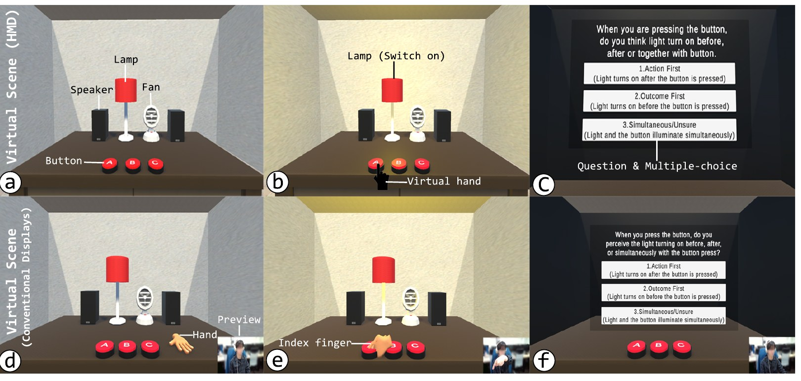
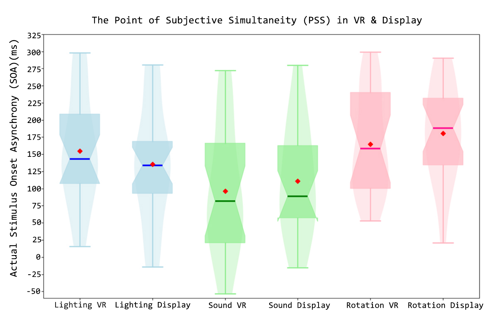
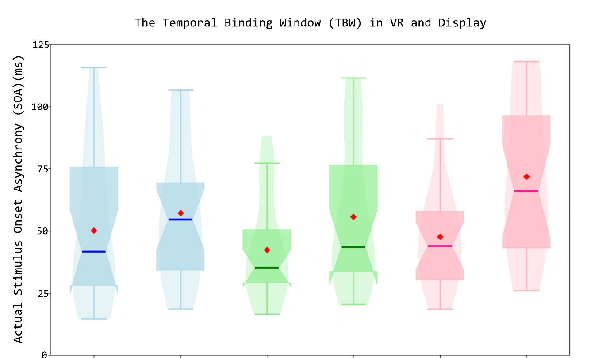

How Much Delay Goes Unnoticed? Quantifying Perceptual Latency Thresholds Across Multimodalities in Virtual Reality
Saitama University, Japan
Abstract
In virtual reality (VR), delays between a user's action and sensory feedback disrupt immersion and responsiveness, yet careful budgeting can expand rather than degrade VR's design. We quantify perceptual latency thresholds across three modalities (lighting, sound, rotation) using a fixed-staircase procedure with ternary judgments (N = 20) to estimate the Point of Subjective Simultaneity (PSS) and Temporal Binding Window (TBW). Sound showed the smallest unnoticed delay, rotation the largest, and thresholds differed significantly by modality. Extending to a conventional display revealed no platform differences, indicating thresholds are governed by sensorimotor engagement rather than immersion, yielding latency guidelines for VR application.
Video
SetupOne virtual room, three kinds of feedback, two displays
Every trial starts the same way: the participant presses a virtual button with their right index finger. One of three things happens after a controlled delay, and the participant reports which came first.
Lighting
A lamp switches on and stays lit for about 1 s.
Sound
A speaker plays a clip through noise-cancelling headphones.
Rotation
A desk fan spins up to 800 RPM.

Hardware & software at a glance
- Engine
- Unity 2022.3.47f1, Oculus Integration, Low Poly Office Set
- HMD
- Meta Quest 3, built-in hand tracking, 72 Hz
- Conventional display
- 75 Hz monitor; Intel RealSense D415 + MediaPipe 0.10.3 hand tracking
- Audio
- Sony WH-1000XM2 noise-cancelling headphones, 60% volume
- Rotation stimulus
- Virtual fan at 800 RPM, with a brief spin-up
- Baseline latency (subtracted)
- VR: sound 14 ms, light/fan <0.01 ms · Display: light/fan 21 ms, sound 31 ms
MethodFinding the point where “late” feels “on time”
We used a fixed-step staircase. The system delay starts at 0 ms and moves in 10 ms steps within −400 to +400 ms, depending on what the participant reports:
- Press. The participant presses the virtual button, and the feedback fires after the current delay.
- Judge. They choose one of three answers: Action first, Outcome first, or Simultaneous / unsure.
- Adjust. Outcome first or Simultaneous adds 10 ms of delay; Action first removes 10 ms. The staircase settles where “Action first” is reported about half the time.
- Repeat. 50 trials per modality, 3 modalities, 150 trials per platform (about 45 min), with modality order counterbalanced.
The delay at which action and feedback feel simultaneous. This is the latency guideline. It is the mean delay over trials 16–50, after a 15-trial burn-in.
How spread out the judgments are, so how sensitive a modality is to timing jitter. We use it only for comparison, not as a tolerance band.
Twenty right-handed participants (aged 20–30; 16 men, 4 women) took part. Each did Experiment 1 (HMD) and then Experiment 2 (conventional display).
ResultsSound is noticed first, rotation last, on both displays
Explore the thresholds
Dots show mean PSS ± SEM in ms. The number on the right is the TBW, which is shown for comparison only.
Experiment 1: HMD
Mean PSS was 154.83 ± 18.34 ms for lighting, 95.12 ± 21.60 ms for sound and 164.70 ± 16.54 ms for rotation (mean ± SEM). Modality had a significant effect (one-way RM-ANOVA, F(2,38) = 17.73, p < .01). Sound differed from both lighting (p = .01) and rotation (p < .01) after Bonferroni correction. TBW did not differ across modalities (F(2,38) = 1.48, p = .23). This supports H1-1 and rejects H1-2.
Experiment 2: Conventional display
Mean PSS was 134.36 ± 19.89 ms (lighting), 109.57 ± 18.49 ms (sound) and 179.73 ± 15.69 ms (rotation), and sound again differed from the other two. Here TBW also differed by modality: rotation's window (72.20 ms) was wider than sound's (p = .05).
A two-way RM-ANOVA found no main effect of platform on PSS (F(1,19) = 0.03, p = .86) or on TBW (F(1,19) = 0.56, p = .46), and no platform × modality interaction. Modality had a strong main effect on both. Because platform order was fixed, we read this as consistent with platform-invariant thresholds rather than proof of it.
Show the original Figures 2 and 3 from the paper


Try itFeel the delay yourself
Pick a modality and a delay, then press the button. Try to find the point where the response stops feeling instant.
This is only a demo. Your browser, display and input device add their own latency, often 20–80 ms, on top of the slider. It won't reproduce the controlled study.
GuidelinesSpend your latency budget by modality
We define the latency guideline as the PSS: the delay that users still perceive as simultaneous with their action.
| Modality | Platform | Guideline (PSS) | TBW (comparative) |
|---|---|---|---|
| Lighting | VR | 155 ms | 50.84 ms |
| Sound | VR | 95 ms | 43.05 ms |
| Rotation | VR | 165 ms | 48.33 ms |
| Lighting | Display | 134 ms | 57.30 ms |
| Sound | Display | 110 ms | 55.62 ms |
| Rotation | Display | 180 ms | 72.20 ms |
Prioritise audio timing
Sound has the smallest unnoticed delay on both platforms. If the pipeline has to cut latency somewhere, cut it in audio first.
Continuous motion buys you time
Rotation, an ongoing event with a gradual onset, tolerates the most delay (about 165–180 ms). On a monitor it also has the widest binding window.
One budget for headset and screen
Thresholds did not differ between HMD and monitor. The same latency budget can serve both, because sensorimotor engagement seems to matter more than immersion.
These thresholds mark where a delay becomes entirely unnoticed, not just tolerable. They are much stricter than the latency typical of Wi-Fi or Zigbee smart-home devices.
Scope & limitations
- Platforms differ in more than immersion. Refresh rate (72 vs 75 Hz), field of view and stereo depth, distractions, and arm posture all differed between the HMD and the monitor.
- The fan's spin-up is realistic but adds its own delay, which may inflate the rotation PSS. Stimuli with an instant onset, or force feedback, would isolate motion perception.
- Platform order was fixed (HMD first). Learning or fatigue could contribute to the platform result and to the rotation-TBW difference between experiments.
- Virtual-only interaction. We did not compare with physical buttons or tactile clicks.
- Sample size (N = 20) may inflate between-subject variability. TBW reflects the spread of the staircase, not a fitted psychometric slope.
BibTeX
@inproceedings{hatsakornkhanachok2026delay,
title = {How Much Delay Goes Unnoticed? Quantifying Perceptual
Latency Thresholds Across Multimodalities in Virtual Reality},
author = {Hatsakornkhanachok, Natthaphon and Punpongsanon, Parinya},
booktitle = {International Conference on Extended Reality (ICXR)},
year = {2026}
}
Acknowledgments
This work has been partially supported by JSPS Fellows Grant Number 16J00049 and JST BOOST Grant Number JPMJBY25E2.